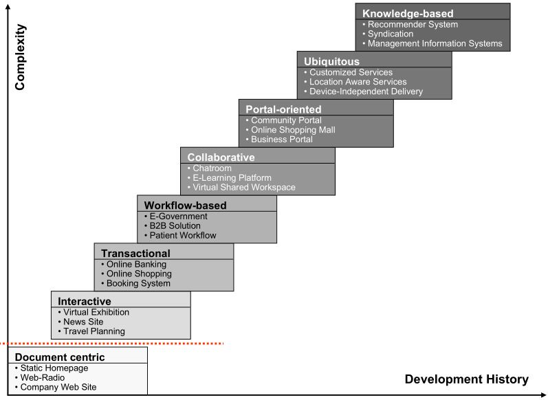

Introducction#
Glossary#
- Internet: Computers net supported by TCP/IP protocol.
- PC Era: Before the Web.
Acronyms#
- AI: Artificial Intelligence.
- CSS: Cascading Style Sheet.
- DB: Data Base.
- DL: Deep Learning.
- DOM: Document Object Model.
- HTML: HyperText Markup Language.
- IoT: Internet of Things.
- OWL: Web Ontology Language.
- PC: Personal Computer.
- SPARQL: Semantic Protocol And RDF Query Language.
- Web: World Wide Web.
- W3C: World Wide Web Consortium.
- XHTML: Extensible HyperText Markup Language.
- XML: Extensible Markup Language.
- XSLT Extensible Stylesheet Language.
Protocols#
- IP: Internet Protocol. (Internet layer)
- TCP: Transmission Control Protocol. (Transport layer)
- HTTP: Hypertext Transfer Protocol. (Application layer)
The Web#
The Web is one service deployed over Internet.
- The main file in the Web is the HTML.
- The Web is supported by HTTP over TCP/IP.
- The Web is standardised by W3C since 1994.
The Web has evolved from PC Era to Web 4.0.
Web 1.0#
Started in 1991.
People connecting to servers.
- Static webs.
- Few content producers / Many readers.
- Rreduced interaction.
Tecnologies:#
- HTTP as application protocol.
- HTML as information document.
Web 2.0#
Started in 2004.
People connecting to people.
- Blogs and social networks began.
- Sharing contents.
- Communities.
Tecnologies#
- XHTML and CSS to data presentation.
- DOM for interactivity.
- XML and XSLT for information sharing.
- JavaScript and Ajax.
Web 3.0#
Started in 2010.
Semantic web.
- Software capable of process, reason and logic deduction.
- Well-labeled information.
Tecnologies#
- OWL-S for ontology.
- SPARQL for DB queries.
Web 4.0#
Started in 2020.
Distributed resources.
- Configurable services.
- Massively scalable services.
- Cloud computing, portability, IoT, AI and DL.
- New interfaces (i.e. voice interfaces).
Web applications#
This has been the evolution of web applications:
- Document centric: Static HTML.
- Interactive: Dynamic HTML generation.
- Transactional: DB queries and transactions.
- Workflow-based: To manage workflows across departments, organisations and companies, etc.
- Collaborative: Shared projects and information.
- Portal-oriented (Website): Offers a broad array of resources and services—usually related.
- Ubiquitous: Services to be accessed anywhere and anytime.
- Knowledge based: Personalized based on data.
- Cloud computing: Computing and storage as a service.
